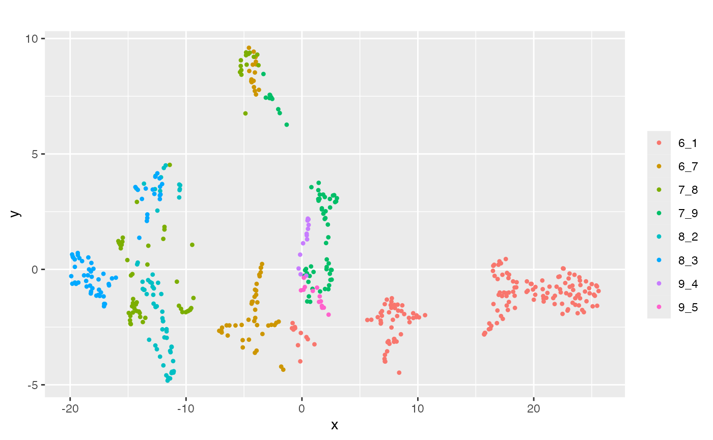

scMultiSim is a simulation tool for single-cell multi-omics data. It can simulate RNA counts, ATAC-seq data, RNA velocity, and spatial locations of continuous or discrete cell populations. It can model the effects of gene regulatory networks (GRN), chromatin accessibility, and cell-cell interactions on the simulated data.
This article introduces the basic workflow of
scMultiSim.
Installation
It is recommended to install scMultiSim from
Bioconductor with:
if (!requireNamespace("BiocManager", quietly = TRUE))
install.packages("BiocManager")
BiocManager::install("scMultiSim")You can also install the development version of
scMultiSim from GitHub with:
devtools::install_github("ZhangLabGT/scMultiSim@main")Running Simulation
Once installed, you can load the package with:
library(scMultiSim)A typical workflow consists two main steps:
- Simulate the true counts;
- Add technical noise and batch to the dataset.
The sim_true_counts function generates the true counts.
It accepts a list of options as input. You are able to control most of
the simulated effects here.
data(GRN_params_100)
results <- sim_true_counts(list(
# required options
GRN = GRN_params_100,
tree = Phyla3(),
num.cells = 500,
# optional options
num.cif = 20,
discrete.cif = F,
cif.sigma = 0.1
# ... other options
))
#> Time spent: 0.05 minsscMultiSim requires users to provide the following options:
-
GRN: The Gene Regulatory Network. -
tree: The cell differential tree.
Typically, you may also want to adjust the following options to control other important factors:
-
num.cells: Specify the number of cells. -
unregulated.gene.ratioornum.genes: Control the total number of genes. -
discrete.cif: Whether generating discrete or continuous cell population. -
diff.cif.fraction: Control the contribution of the trajectory/cluster specified by the tree. -
cif.sigma: Control the variation of cells along the trajectory.
The Simulating
Multimodal Single-Cell Data tutorial will introduce these functions
in more detail, including how to simulate RNA velocity data and ATAC-seq
data. The Simulating
Spatial Cell-Cell Interactions tutorial will focus on simulating
spatial cell locations and cell-cell interactions. You may also want to
check the Parameter
Guide or running the scmultisim_help() function for a
complete list of options.
The Shiny app
Don’t forget that scMultiSim provides a Shiny app to help you explore
the options interactively. Simply run run_shiny() to start
the app.
Add technical noise and batch effect
You can use add_expr_noise to add technical noise to the
dataset, and divide_batches to add batch effects.
add_expr_noise(results)
#> Adding experimental noise...
#> 50..100..150..200..250..300..350..400..450..500..Using atac_counts
#> Time spent: 0.07 mins
divide_batches(results, nbatch = 2)
#> Adding batch effects...Visualize the results
scMultiSim provides various visualization functions to help you understand the simulated data.
For example, plot_tsne() visualizes the cells using
t-SNE.
plot_tsne(results$counts, results$cell_meta$pop)